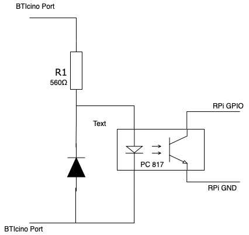
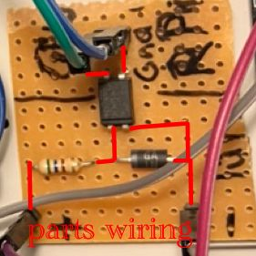
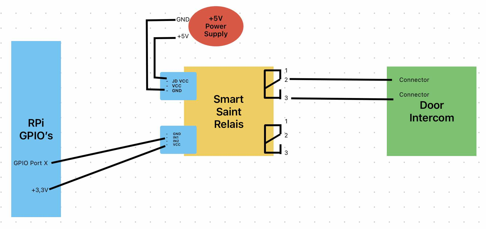
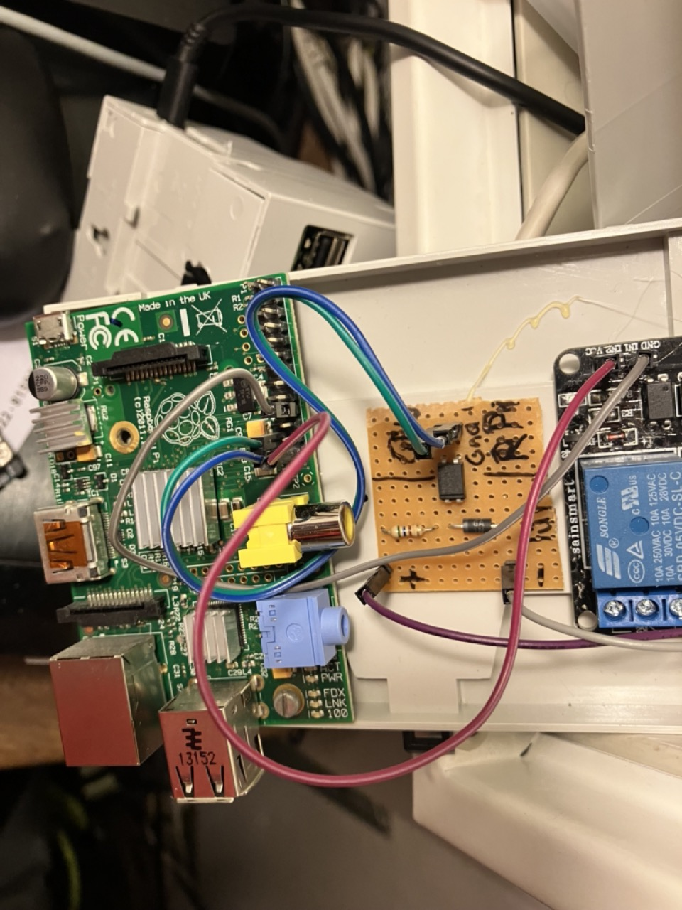
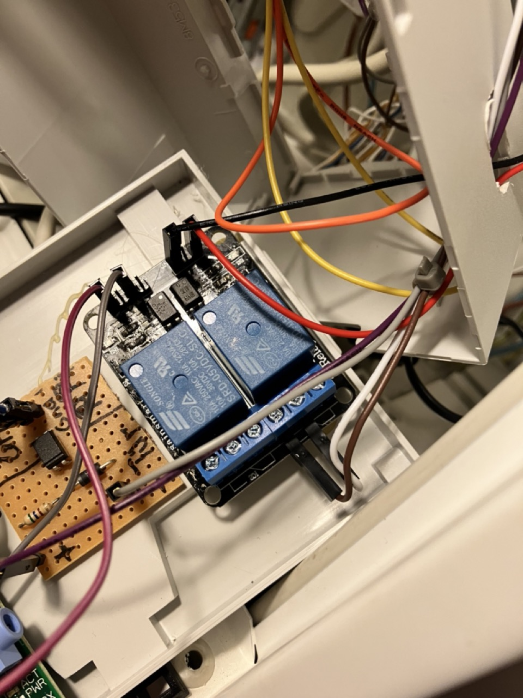
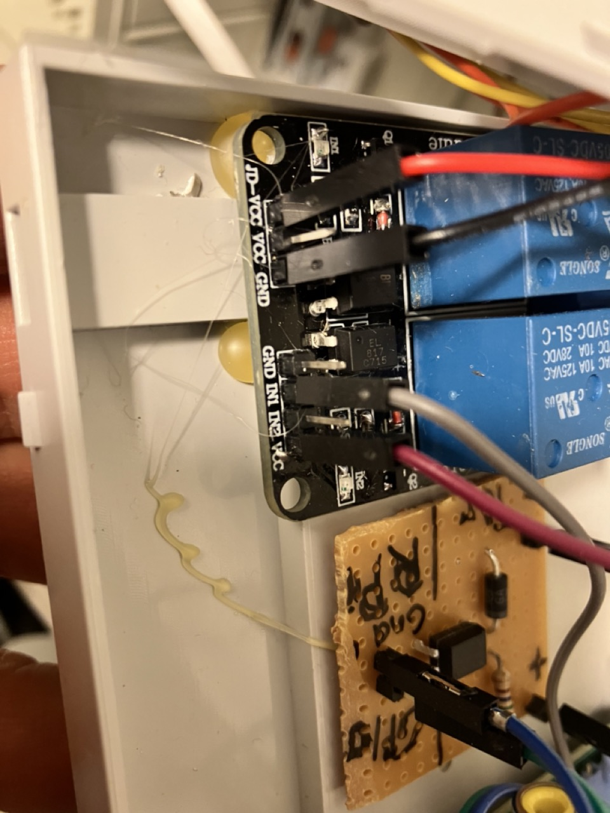

Front-door intercom automation - (FDIA)
Short description
Raspberry Pi intercom front door automation for recognising doorbells, opening door and creating photos.
Notify via your own privat Telegram chat channel.
Opening the front door via the private Telegram chat channel.
Furthermore, a separate website & REST API is offered to open the front door.
It supports Blink camera’s and my simple PiCam_API project.
Door opening authorization is handled by timebased one time passwords.
Door bell detection circuit and door opening relais board can nearly handle any door intercom which is not connected to internet.
Bell circuit must be build by your self, but it is documented below.
Opening relais board can be buyed and must just be wired.
Demo
Long description
Starting point was an article Überallkingel at heise.de.
This front door intercom system extends any standard front door intercom system,
which are not connected to the Internet or ready for it.
The project offers the following functionality:
Front door opening via nearly any door intercom system. See hardware build Generic door opener relais:
Possibility to enable / disable door opening feature - runs without required hardware
Front door bell detection. See hardware build Door bell detection
Possibility to enable / disable door bell detection - runs without required hardware
Notification via private Telegram channel PyTelegramBotAPI library
Front door opening via time-based one-time password PyOTP library
Photo snapshot send via telegram on doorbell ringing.
Use of Blink cameras with BlinkPy library
Use of my Raspberry PI camera Project PiCam_API or PiCam_API_2 Project.
Day / night detection to select the appropriate camera if several are used simultaneously via astral library
Blink camera multi factory authentication setup via telegram chat message if Blink requires this.
Multi camera type support - Blink camera or PiCam_API camera photo snapshot and sending on Telegram message request.
Automatic camera selection between Blink or PiCam_APi possible.
Fallback camera selection if one fails.
Internal Flask website to open the front door with the browser using a time-based one-time password.
Internal Flask REST-API to open the front door (via time-based one-time password).
Possibility to enable / disable Flask Web-UI / REST-API - run without web interface
Possibility to enable/disable cameras, web-ui and hardware circuit (opener, bell detection) on your use case basis. (E.g. Project can use for only door opening via Telegram chat - without dell detection, no web-ui, no cameras - in case us want to use blink video door bell natively)
Features advantage comparision FDIA, Blink, Ring and PiCamAPI
Project with Product / |
FDIA with PiCamAPI Camera |
FDIA with Blink Camera |
Blink only (no FDIA) |
FDIA with no build HW module |
|---|---|---|---|---|
Open Door |
✅ with build HW module Door opener board with relais: |
✅ with build HW module Door opener board with relais: |
❌ |
❌ |
detect door bell ring |
✅ with build Hw module Door bell detection board |
✅ with build Hw module Door bell detection board |
✅ |
❌ |
Notification (channel) |
✅ via Telegram group |
✅ via Telegram group |
✅Blink App |
✅❌ Telegram but no HW module -> no detection |
Multi user notification |
✅ |
✅ |
❌ dependend on Account |
✅ |
Multi user door opening |
✅ |
✅ |
❌ |
❌ |
GDPR data storage |
✅ no Internet facing data/nor Camaera exposure; Telegram chat group archival dependend on personal deletion interval |
✅Telegram chat group archival dependend on personal deletion interval - Cemera internet/clodu exposed |
❌ Camaera Internet / Cloud exposed |
✅ no data Exposure |
possible local usage without Internet (door opening only) |
✅ |
✅opening - ❌ no camera snapshot |
❌ |
✅ |
Outlook/Ideas - Improvements plan
in development
[x] Integrate Ring Cameras(video Doorbell too) (depends on lack of hardware - donation welcome - or temporary provision for development)
Plan
[ ] Same solution is in development as JAVA Spring Boot app too.
[ ] Next it’s planned to extend the Web-UI with more features (like show snapshots and other things)
Ideas
[ ] Integration offering in HomeAssistant
[ ] Further it’s planed to integrate door opening in Amazon Alexa as ProofOfConcept.
[ ] add docker container build, image at GHCR and support via docker-compose.yaml
[ ] Blink door bell notification
[ ] Support Google / Microsoft Authentication App with their format
Get started
Requirements
Hardware:
Raspberry PI B+ or above
Blink Camera oder Pi Zero with PiCam_API Project installed
Front door intercom like BTIcino
Software:
Python 3.10 or above
pip
git
Rasbian oder Ubuntu on Raspberry Pi
Code tree structure
.
├── bot # Telegram modul classes for receiveing and sending
├── camera # Camera module
├── config # Config module, enum and data classes
├── docs # Further documentation
│ ├── _static # static image dir
│ ├── blink_camera_setup.md # Blink camera setup
│ ├── BTIcino_Intercom-wiring.md # BTIcino door intercom wiring plans
│ ├── GDPR_Germany_hint_camera_monitoring_-_DSGVO_Fotografische_Ueberwachung.html # HTML DSGVO Template for door camera
│ ├── GDPR_Germany_hint_camera_monitoring_-_DSGVO_Fotografische_Ueberwachung.md # DSGVO Template for door camera
│ ├── How_to_install_fresh_RPi_with_code.md # Install software code with a fresh Raspbian Image
│ ├── How_to_setup_OTP_App_on_mobile_phone.md # Setup OTP App on mobile phone
│ ├── one_time_password_setup.md # How to setup otp config
│ ├── pull_request_template.md # Pull request template
│ ├── SmartSaint_Relais_Jumper.md # Door opener SmartSaint Relais jumper and circuit plan
│ ├── telegram_bot_setup.md # Setup Telegram bot
│ └── totp_helper_cli.md # TOTP (OTP) helper script - get and validate
├── door # Door module classes for opening or bell detection
├── test # Unit tests
├── tools # CLI Helper tools
│ ├── encrypt_decrypt_password_with_base32.py # Encrypt or decrypt with base32 input password
│ └── totp_helper_cli.py # create or verify a TOTP from config file
└── web # Flask Webpage & REST-API modul class
├── static # Static web page icon files for favicons
└── templates # Served and rendered web pages
fdia.py # Main program code
fdia.service # Linux systemd service template file
requirements.txt # Depend lib to install via pip
config_template.yaml # Template config file
Makefile # make for build html docs - github pages
README.md # This readme
LICENSE # This project license
CHANGELOG.md # Project release changelog file
requirements_licenses.txt # depend library licenses
Installation
For fresh install on RaspberryPi with code follow How_to_install_fresh_RPi_with_code.md
Clone repo to your RPi.
git clone git@github.com:OliverDrechsler/front_door_intercom_automation.gitgo into project repo
cd front_door_intercom_automationnow run pip3 to install python requirments
pip3 install requirements.txtor with poetrypoetry run installcopy config_template.yaml to config.yaml file
cp config_template.yaml config.yamledit
config.yamlfile with your favorite editorfor creation of telegram bot and privat chat channel follow telegram_bot_setup
for creation of base32 encrypted timebased one time password master password follow one_time_password_setup
for blink configuration follow blink_camera setup
for picam configuration follow config_template.yaml doc remarks or PiCam_API Projects
for flask web config follow description in
config_template.yaml
Check RPi system permission if want to run in user permission context
Check if the gpio Group Exists
First, verify if the gpio group exists on your system:
getent group gpioIf it doesn’t exist, you can create it by running:
sudo groupadd gpioAdd Your User to the gpio Group. Replace your_username with your actual username:
sudo usermod -aG gpio your_usernameGrant Group Permissions to GPIO
You can adjust the permissions for the GPIO device files.
This step is required to allow the gpio group to read and write to the GPIO pins:
sudo chown root:gpio /dev/gpiomem sudo chmod g+rw /dev/gpiomem
Update udev Rules
To automate the permission adjustments at boot, you can add a udev rule:
Create a new file in /etc/udev/rules.d/:
sudo nano /etc/udev/rules.d/99-gpio.rulesAdd the following line to this file:
SUBSYSTEM=="gpio", GROUP="gpio", MODE="0660" SUBSYSTEM=="gpio*", PROGRAM="/bin/sh -c 'chown -R root:gpio /sys/class/gpio && chmod -R 770 /sys/class/gpio; chown -R root:gpio /sys/devices/virtual/gpio && chmod -R 770 /sys/devices/virtual/gpio;'"
Save and exit the file.
Reload udev rules:
sudo udevadm control --reload-rules && sudo udevadm triggerReboot the System
Or run Script as a Superuser The simplest way to give your script the necessary permissions is to run it with sudo.
This grants it root privileges, which allows it to access the GPIO pins directly.
sudo python fdia.py
If you’re using Python 3, make sure to run:
sudo python3 fdia.pyrun app
python3 fdia.pyand check log output or with poetrypoetry run startfor troubleshooting see Help
setup app to run as daemon / service in linux follow System service setup
Helper tools
Encrypt and decrypt a password with base32 for totp
see further docu docs/one_time_password_setup.md
get a OTP password or verify a OTP via cli
see further docu docs/totp_helper_cli.md
System service setup
Edit file fdia.service and adjust to your path ( ExecStart=/home/pi/front_door_intercom_automation/fdia.py ).
To run fdia as a service on startup with root permissions
copy fdia.serviceto /etc/systemd/system/to your RPi systemd deamon folder.
Run systemctl daemon-reload and systemctl start fdiato start it as a service.
Enable system service with systemctl enable fdia.service.
Configuration - config files
config.yaml - config_template.yaml
config_template.yaml is a template config file and must be adjusted to your needs.
Copy config_template.yaml to config.yaml into project root folder.
cp config_template.yaml config.yaml
In this yaml file you’ll find after # comments / hints for which the line is what to configure.
blink_config.json
If you have configured in the config.yaml your blink camera
( followed by this docu blink_camera setup )
after starting fdia.py application you can send your received blink 2 factor token via telegram channel
to the application ( /blink_auth here_your_blink_otp_code ).
It starts to authenticate via 2FA(FactorAuthentication) / MFA (multi factor authentication) and saves afterwards the
blink config to the file blink_config.json. From now on it is getting used and normally no further
2FA / MFA authentication is not anymore required.
Handle this file careful since there is your blink secret stored.
Setup OTP
To store a master password for totp time pased one time password it must be encoded with base32 as a hash.
You can run the the cli script encrypt_decrypt_password_with_base32.py in tools directory.
Than you get a base32 hashed password.
Please store this password in the config.yaml under section otp: password:
For further docu refer to docs/one_time_password_setup.md
Cameras
This project actually supports two type of cameras.
Blink cameras with BlinkPy library
This means all Blink cameras are supported.My Raspberry PI camera Project PiCam_API
or PiCam_API_2 Project.
It is a small POC self coded software project which just requires a Raspberry Pi and a wired Camera.
It is your choice when you want to be more GDPR compliant and don’t want to expose your camera to the internet. Also you can use this project from your home wireless network only via web ui and must not use telegram. PiCam_API_2 uses libcamera2 vs. PiCam_API uses the first libcamera. There some hardware / os requirement differences between these versions see docu libcamera2 requirements section.
GDPDR EuropeanUnion and Germany hint - DSGVO Hinweis zur Kameraüberwachung in Deutschland
Only for Germany required and maybe partially for EU - check by your self Other countries are not known to me - check by yourself
In Deutschland ist es erforderlich einen sichtbaren DSGVO Hinweis zur fotografischen Kamera Überwachung anzubringen.
Datenschutzrechtliche Schranken für die private Videoüberwachung
und
Datenschutz: Geldstrafen wegen Videokameras in Autos und Wohnhäusern
Weiter hat die Datenschutzkonferenz (DSK) eine Orientierungshilfe herraus gegeben.
Deshalb habe ich folgenden Hinweis auf meinem Grundstück sichtbar für alle angebracht habe.
siehe vorlagen Datei
Die Vorlage ist auch als reine HTML Datei hier zum downloaden und anpassen.
Blink Cameras
For configuration of the blink camera please procceed with further docu/blink_camera_setup.md.
Raspberry Pi Camera Project PiCam_API
For configuration of the PiCam_API please procceed with the PiCam_API Project docu or PiCam_API_2.
Telegram
Telegram setup
please follow exra documentation here telegram_bot_setup
Telegram receiving message commands and interactions
Received Telegram chat channel message command to action
/Foto= request to take a foto auto choice for PiCam or Blink config and send it in the telegram chat channel/Blink= request to take a Blink foto and send it in the telegram chat channel/PiCam= request to take a PiCam_API foto and send it in the telegram chat channel/Blink_auth <here your 6 digit security code>= request to do a blink 2FA / MFA authentication and store blink config<time based one time password code>= validate totp, take a foto send it and open door.
Mobile Setup
Install on your Mobile following Apps and set it up.
Mobile Apps
Telegram on mobile phone
Please do it by yourself or consult google.
OTP App on mobile phone - How to setup
Provide configure same OTP config in OTP Auth App like in config.yaml defined.
For setup OTP App follow How to setup OTP App on mobile phone
Telegram and OTP App - mobile usage
Use OTP App to get a totp code and copy to clipboard.
Paste clipboard code into telegram chat channel where front-door intercom automation bot ist listening.
When bot receives valid code - door will be opened.
Apple IOS Shotcuts App can be used to to send direct otp code passwords to REST-API.
As long as you are in the local network as the fron door intercom automation is you can send it direct.
If you’re away for your home wireless network you can use a VPN tunnel to connect to your ISP router
and than send the otp door open code to the REST-API.
Do not expose the Flask Web-UI or REST-API to the internet!
VPN Tunnel activation can also be automated like the REST-API call in IOS Shotcut App.
Apple IOS Shortcuts App - How to automate door opening
Follow this guide For setup Apple IOS Shortcuts App to open door
This can only connect to Flask Web REST-API.
It will normally only work as long you’re in the same home wifi network.
To use it while you’re roaming (not at home), i recommend to use the telegram chat group to open the door.
Another possibility is to setup a VPN Tunnel in your ISP router. Activate this tunnel before and than use IOS Shortcut to open.
Web UI & REST-API usage
A Flask Web-UI will be provided on given config port in config.yaml under section web:
web:
flask_web_port: 5001 # flask webserver port
flask_secret_key: "my_super_flask_secret_key" # provide here your own flask secret key
browser_session_cookie_lifetime: 30 # browser cookie key
flask_users: # list of flask app login user for webpage and/or rest api call
- WebUser1: "password"
- WebUser2: "password"
Here you can specify multiple users which are allowed to access the Web page and REST-API.
For TLS cert encryption it’s recommend to use a NGINX reverse proxy with TLS cert configuration.
See sample Docker container project here https://github.com/bh42/docker-nginx-reverseproxy-letsencrypt
Important: I do not recommend to expose the Web-UI to the internet! It is not hardend nor pentested
To access the Web-Ui/REST-API while you roam - i recommend to setup a VPN Tunnel in your ISP Router.
Activate VPN Tunnel before you send the web request.
A REST-API POST call can to URL http://<fqdn, hostname or ip>:<port>/open.
For Authentication a base64 encoded header with username and password must be added.
Request body must be
{
"totp": "<here time based one time password code>"
}
curl command example
curl -X POST http://127.0.0.1:<FLASK_WEB_PORT>/open \
-H "Content-Type: application/json" \
-H "Authorization: Basic <BASE64_ENCODED_CREDENTIALS>" \
-d '{"totp": "<YOUR_TOTP_CODE>"}'
The <BASE64_ENCODED_CREDENTIALS> is username:password encoded base64 string.
Hardware Circuits
The door bell detection board and the door opener board/relais
can be broadly used for many door intercom’s (and not only to BTICino)
which has no specific connection ports or is Internet ready.
Door bell detection
To enable the door bell detection feature you have to configure the config.yaml file.
See also config.yaml - config_template.yaml
When hardware circuit is to a GPIO port connected, then enable this feature with True in config file
section: GPIO enable_door_bell_port and specify the port in door_bell_port.
required HW parts
Door bell detection board - required electronic parts
Strip grid circuit board of Epoxy – 100 x 100 mit 2,54mm
Optocoupler (PC817)
Resistor: to get correct voltage of 1,2V for Optocoupler, a resistor of 330 Ohm (8 Volt), 560 Ohm (12 Volt) or 1,2 Kilo ohm (24 Volt)
Raspberry Pi Hutschienen-Netzteil (Mean Well MDR-20-15) für den Einbau in den Sicherungskasten
Generic door bell circuit and wiring plan


Generic door opener relais:
To enable the door opening feature you have to configure the config.yaml file.
See also config.yaml - config_template.yaml
When SmartSaint relais hardware is connected to a GPIO port connected,
then enable this feature with True in config file
section: GPIO enable_door_opener_port and specify the port in door_opener_port.
I recommend to use the SmartSaint relais board to open door.
It is simply to use and you have just to connect it to your RPi GPIO port and
on the other side to your door intercom system.
saintsmart 2-Channel 5V Relay Module
shop where to buy saintsmart relais
Smart Saint Relais circuit wiring
Because of the RPi does not deliver enough power, i connected an additional +5V power supply
to the SmartSaint port JD-VCC and JD-GND.
A RPi GPIO port X connected to SmartSaint IN1 and a RPi GPIO Port with +3,3V to SmartSaint Relais VCC.
Other side of SmartSaint relay ports connected to door intercom system.

For further interest Smart Saint Relais Jumper and circuit layout
see additional Smart Saint Relais Jumper and circuit layout plan
Door open summer SaintSmart relay wiring pictures:



BTIcino door intercom specific wiring plans
Help
Debugging
You can set the log level via environment variable LOG_LEVEL
to either CRITICAL,ERROR,INFO,WARN orDEBUG
before you start the app.
The shell command will be export LOG_LEVEL=DEBUG && python3 fdia.py
In case you want to store it permanently, you can add it in fdia.py file
and at top of the file (line 22 - after imports)
there you’ll find the section
"""Define logging LEVEL"""
default_log_level = os.getenv('LOG_LEVEL', 'INFO').upper()
Change INFO to DEBUG and store the file.
Now when you run the fdia.pyapp again you get full detail debug log of:
fdia app and it 6 threads
fdia thread = main thread
thread_receive_telegram_msg
thread_send_telegram_msg
thread_cameras
web_thread
thread_door_bell
thread_open_door and
blink lib in debug mode
telegram lib in debug mode
The communication between thread is handled via queues.
Therefore exists this config/data_class.py which is the the data transfer class between the threads
to submit the task.
In case you do not find ther error in the log, raise a GitHub issue with your error.
Hints
Following important libraries are used and can also be consulted in case where issues are in
Blink -> BlinkPy library
Telegram -> PyTelegramBotAPI library
Web-UI and Rest-API (Flask) -> Flask
Timebase one time password -> PyOTP library
Ciruit wiring -> Überallkingel at heise.de
Internal code API docu can be found at github pages linked on top above or in code itself.
How to run unit-tests
pytest --cov=./ --cov-report=html
GiHub actions pipelines
Check folder .github
dependabot.ymldependcy check pipeline for security issuesworkflows/ci.ymlcontious integration pipeline builds code and tests codeworkflows/codeql-analysis.ymlCodeQL analysis pipelineworkflows/docs_update.ymlbuild GitHub page pipeline
ChangeLog
see CHANGELOG file CHANGELOG
Author info
I’m Oliver Drechsler and a Java and Python developer.
📫 Connect with me:: …
License
This Software is licenced under MIT see license file of this project.
Why is there no GPLv2 dependency as I understand it? pyTelegramBotAPI published under GPLv2, but it is used as a shared library which is linked dynamic. Further only source code is distributed and python code is compiled during runtime (JIT) on user system, therefore it is no distribution. For more details see Fundamental aspects of copyleft in GPL and read section 7. Libraries
Dependcies to other projects and libraries listed here requirements_licenses.txt.
It is create with licensecheck
pip3 install licensecheck
licensecheck -u requirements > requirements_licenses.txt
Hint for licensecheck:
In case you receive a traceback error
check for line comments in requirements.txt and remove them temporary.
Security
Contribution
Contribution guide Pull request docu can be found here in docs/pull_request_template.md